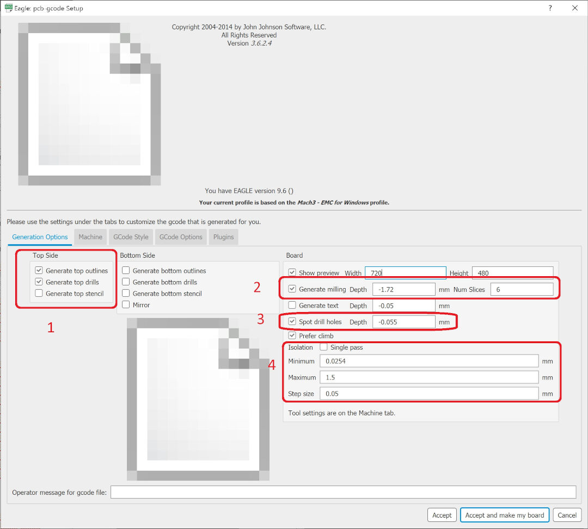
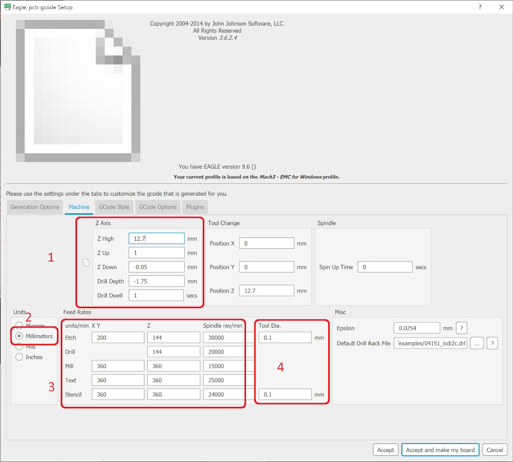

Week 09
Input Devices
Group Project
- Measure the analog levels and digital signals in an input device.
Individual Project
- Measure something: add a sensor to a micro-controller board that you have designed and read it.
Learning outcomes:
- Demonstrate workflows used in circuit board design and fabrication.
- Implement and interpret programming protocols.
Have you:
- Described your design and fabrication process using words/images/screen-shots.
- Explained the programming process/es you used and how the micro-controller data sheet helped you.
- Explained problems and how you fixed them.
- Included original design files and code.
Week workflow
Study Neil's input boards → Decide what type of imput → Design Schematic/Boad → Mill the board→ solder components → debug → edit and publish website
Tools used
- Solder Station
- TaoBao CNC
- test equipment: digital voltmeter, oscilloscope, regulated power supply
Software Used
- Autodesk Eagle
- PCB-Gcode ULP for Autodesk Eagle
- Auto Leveller
- Fab Modules
- Gimp
Files
Group Assignment
Go to group assignment page
Individual Project
This week I will be testing a thermistor. Since I am building an incubator I will be needing to measure and control temperature.
The thermistor I chose is the B57560G0104, after reading its data-sheet I learned that at 25 degrees Celsius it has an resistance of 100K.
The way the thermistor works is by decreasing its resistance as the temperature increases. Because the IC on its ADC pin reads voltage not resistance we need to set a voltage divider in other to derive its resistance.
I will connect the Thermistor in series with the resistor that will be connected to VCC. One end of the thermistor will be connected to ground and the other that is in series.

References
As done on week 6 I started by reviewing Neil's boards. The one I would be redesigning is the visible light input board.
{kind=link}
Experimenting with an Arduino
My objective with this experiment was to understand and test the thermistor and the code. I got it working but the temperature was not really accurate. Off course I am not using accurate instruments to calibrate the thermistor so I never know what is not correct so I ended up boiling water so I would know at least the temperature needed to be around 100 degrees Celsius.

Experiment with the board I designed
Designing the PCB

Because I normally program with Arduino IDE it's quite useful to have not only the data-sheet but also a diagram that converts the pins from one programing platform to the other.
On a quick look we can determine that there are 4 Arduino analog pins. They all have a analog to digital converter (ADC0, ADC1 ADC2, ADC3), so they could also be used as digital pins together with pins 1, 0 and 2.
For this assignment I will need 1 analog pin and 2 digital pins. The analog pin I will connect the thermistor and the digital pins are for the serial communication.
The board will have a header for the ISP programmer, 2 headers in the sides so all pins can be used and tested as needed as well as a led just to show there is power coming in.
Autodesk Eagle is the weapon of choice. but I will be creating the gcode with PCBtoGcode addin.
Resistor calculations
In order to calculate the resistor values, I examined the following Datasheets and the calculations/observations I made:

Bellow is how my schematics looks like:


Code for the attiny45
I used 3 sets of code for this assignment.
- software serial sources: source1 source2 Because I could not use regular hardware serial on the attiny it was necessary to include a library to make this function available:
- temperature collection with Arduino
- My version on the code contains both the software serial and also part of Marcazzan's code as the attiny would not compile with both the software serial and the log calculations. The code had to then be limited to only 4k after compilation.
#include "SoftwareSerial.h"
SoftwareSerial Monitor(1, 0);
void setup()
{
Monitor.begin(9600);
pinMode(0, OUTPUT);
pinMode(1, INPUT);
}
also when you whant to print something you need to do it in a different way:
Monitor.println(whatever you what to print here);
The code I used for the experiments with Arduino I found on the Arduino's project hub How Easy Is It to Use a Thermistor?! authored by Marcazzan_M:
//Thermometer with thermistor
/*thermistor parameters:
* RT0: 10 000 Ω
* B: 3977 K +- 0.75%
* T0: 25 C
* +- 5%
*/
//These values are in the datasheet
#define RT0 10000 // Ω
#define B 3977 // K
//--------------------------------------
#define VCC 5 //Supply voltage
#define R 10000 //R=10KΩ
//Variables
float RT, VR, ln, TX, T0, VRT;
void setup() {
Serial.begin(9600);
T0 = 25 + 273.15; //Temperature T0 from datasheet, conversion from Celsius to kelvin
}
void loop() {
VRT = analogRead(A0); //Acquisition analog value of VRT
VRT = (5.00 / 1023.00) * VRT; //Conversion to voltage
VR = VCC - VRT;
RT = VRT / (VR / R); //Resistance of RT
ln = log(RT / RT0);
TX = (1 / ((ln / B) + (1 / T0))); //Temperature from thermistor
TX = TX - 273.15; //Conversion to Celsius
Serial.print("Temperature:");
Serial.print("\t");
Serial.print(TX);
Serial.print("C\t\t");
Serial.print(TX + 273.15); //Conversion to Kelvin
Serial.print("K\t\t");
Serial.print((TX * 1.8) + 32); //Conversion to Fahrenheit
Serial.println("F");
delay(500);
}
the code here
#include "SoftwareSerial.h"
#define VCC 5 //Supply voltage
#define R 100000 //R=100KΩ
float RT,VRT,VR;
SoftwareSerial Monitor(1, 0);
void setup() {
Monitor.begin(9600);
pinMode(0, OUTPUT);
pinMode(1, INPUT);
}
void loop() {
VRT = analogRead(3); //Acquisition analog value of VRT
VRT = (5.00 / 1023.00) * VRT; //Conversion to voltage
VR = VCC - VRT;
RT = ((VCC*R-R*VRT)/VRT); //Resistance of RT
// Monitor.println("Voltage Read:");
// Monitor.print(VRT,10);
// Monitor.println("Voltage drop:");
// Monitor.print(VR,10);
Monitor.print("Resistance:");
Monitor.println(RT);
delay(1000);
}
Aso his formula of finding the resistance did not work for me I suspect it is because I use a NTC thermistor, so I had to modify the formula and it looks like this now:
RT = ((VCC*R-R*VRT)/VRT); //Resistance of RT
Designing and making the PCB
Since I modified my work-flow I decided to update it. Now It contains the usage of PCB-Gcode ULP and Autoleveller software usage.
Autodesk Eagle Design
With the schematics ready click on:
- SCH/BRD this will open a dialog
- On the dialog click on yes in other to place the components next to what will be the board space.


Ratsnest dilema

Board BOM
| qty | Location | Digikey or MouserPart number | Manufacture Part # | Description |
|---|---|---|---|---|
| 1 | U1 | ATTINY45V-10SU-ND | ATTINY45V-10SUR | IC MCU 8BIT 4KB FLASH 8SOIC |
| 2 | R1 | 311-10.0KFRCT-ND | RC1206FR-0710KL | RES SMD 10K OHM 1% 1/4W 1206 |
| 1 | R2 | 311-100FRCT-ND | RC1206FR-07100RL | RES SMD 100 OHM 1% 1/4W 1206 |
| 1 | D3 | 160-1169-1-ND | LTST-C150GKT | LED GREEN CLEAR 1206 SMD |
| 1 | C1 | 445-1423-1-ND | C3216X7R1H105K160AB | CAP CER 1UF 50V X7R 1206 |
| 1 | FTDI | 6 pin header | ||
| 2 | Headers 1X4P |
PCB-Gcode






Autoleveller


Machining process


The results


Foot notes
avrdude -Cavrdude.conf -v -pattiny45 -cusbasp -Pusb -e -Uefuse:w:0xff:m -Uhfuse:w:0xdf:m -Ulfuse:w:0xe2:m
serial motor : https://www.youtube.com/watch?v=9CX4i6rMXS8
attiny fan controler project: http://www.robotroom.com/DualFan.html
reads temp with arduino and ntc thermistor https://circuitdigest.com/microcontroller-projects/arduino-thermistor-interfacing-code-circuit
setup arduino 022: http://highlowtech.org/?p=1229
reflow oven project: http://pleasantsoftware.com/developer/3d/reflow/
pul up resistor (RES SMD 10K OHM 1% 1/4W 1206) from RST to VCC
decoupling capacitor (CAP CER 1UF 50V X7R 1206) from VCC to GND to reduce noise